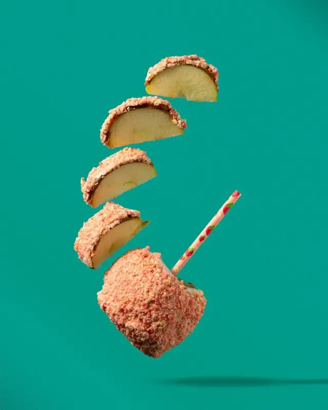
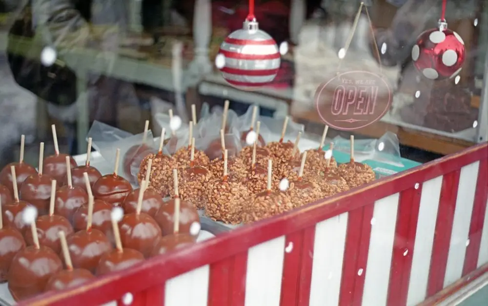
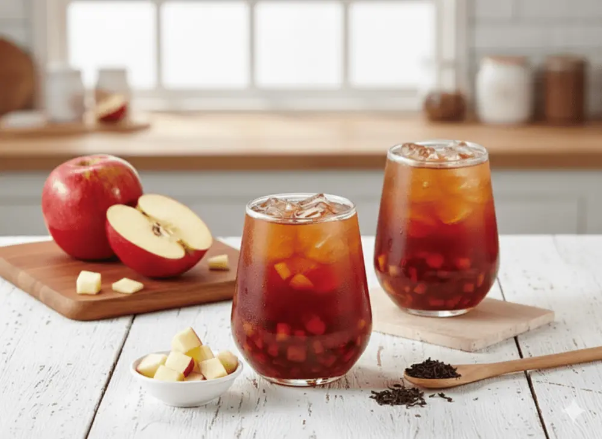

Articles / Recipes
It’s Applicious – try our caramel apple syrup!
2026-01-08 · New products, Recipes, New products, Recipes

Original public content from Yen Chuan. Product claims and specifications remain subject to confirmation by the company.
Winter times calls for wintery drinks, and nothing warms you up more than a warm boba tea. Getting tired of the usual cinnamon, chocolate or hazelnut? Try caramel apple!

What’s a caramel apple?
Exactly what it says on the tin, caramel apples are simply apples dipped (or rolled) in caramel and allowed to cool.
Sometimes people roll the still-hot apples in nuts and other crunchy bits before letting them cool, creating “Taffy Apples”.
No matter which type, one thing’s for sure: Those apples sure are addicting!
Bite into a caramel apple and let the rich, smoky caramel wash over your tastebuds, meanwhile the crispy apple gives you a satisfying crunch.
The slight tartness of the apple balances out the sweetness from the caramel, leaving you hungry for more!
Where did it come from?
Snacking on apples with a sugar coating isn’t exactly new – the Europeans have been making Candy Apples (apples covered with hard sugar candy) since the 19th Century.
However, Caramel Apples are a distinctively American thing! The treat was created in around the 30s-40s, but who invented it was debatable. In fact, at least two companies claimed to create the original recipe.
Nevertheless, caramel and candy apples are both staples in autumn (when it’s apple harvest season) and especially Halloween, where adults munch on their crispy apples while watching the kids trick-or-treat.
They’re also commonplace in carnivals, even Japan has candy apples for summer festivals!

Syrupy goodness!
Want to relive those same fall season memories? Our caramel apple syrup is for you!
Packed with a distinctive mix of sweet, smoky and tart flavours, the syrup faithfully recreates what makes this autumnal treat so addicting. Perfect for swirling into your favourite drinks, including bubble tea.
Moreover, the syrup boasts a thicker, richer texture, much like the classic Tiger Dot syrup. With this syrup, you can give the ol’ brown sugar boba milk an applicious twist! It’s also suitable for desserts – spread it on french toast, or drizzle on some ice cream!

Caramel apple black tea
The classic apple black tea with a twist, the mollassy caramel adds an extra complexity to this fruity drink. Serve hot during the wintery times, or cold when enjoying the summer days!
What you’ll need
How to make
Brew the black tea according to your preferred strength.
Add the cubed apples to a glass, then add the black tea. Add the apple syrup and stir
If served cold, add the ice cubes. Enjoy!
Want to turn this into bubble tea? Add tapioca pearls for a bit of chew, or add crystal boba/coconut jelly if served cold for extra crunch.
Intrigued?
Want to give your winter drinks a taste boost? Give this syrup a try!
Contact us to get started: